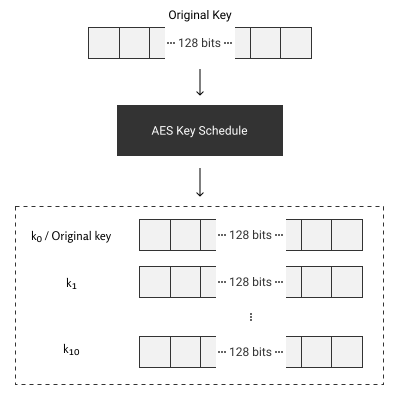
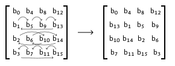

How AES Works
What will this section cover?
- The inner workings of the AES algorithm.
- Different operations utilized by Rijndael block ciphers:
In order to do break AES with power analysis, we need a reasonably detailed understanding of how AES works. So let us do a crash course.
The AES algorithm is a subset of the Rijndael block cipher algorithm and has basically become synonymous with it. As the name Rijndael block cipher implies, we apply the encryption to fixed-size blocks of plain text. With the size of the blocks being equal to the key size. The encryption is based on alternating XOR operations and shuffling the bytes of the blocks. Let dive into each individual component of the algorithm.
The Plan
As said previously, the AES algorithm works by alternating XOR operations with the shuffling of the bytes of the blocks. The algorithm specifies that this is done in rounds. Since AES has 3 different key sizes (128, 192 and 256 bits), each different key size also has a different number of rounds. The amount of rounds are 10, 12, and 14, respectively.
How does a round look like? Although the first round and the last round have small differences to the rest we can divide all the rounds up into two sections the shuffling of bytes and the XOR operation. Let us first have a look at the XOR operations.
XOR operations
The XOR operation is essentially the mixing in of the key and is what makes the running of the AES algorithm different depending on what key is used. Firstly, in order to make reversal even more different, we create multiple new keys from the original key. This is called the AES key schedule. This walkthrough will not go into detail on how this key-expansion works, but if interested one can look up details. The part which is important to this walkthrough is that after this expansion we have as many new keys as we have rounds. We will number all the from \(k_0\) to \(k_{10}\) (assuming we are using 128 bit AES). Here \(k_0\) is the original key and \(k_1\) till \(k_{10}\) are the expanded keys.

Figure 1: The AES Key Schedule
With these keys we performs a XOR on a block. The XOR operation is a notorious one way operation. This is due to the lack of information the output shares about the input. When we do a one bit XOR operation and we receive 1 as an output, the input could have been (0,1) or (1,0). We also have two options when we get 0 as output. In the case of one bit, this is not that useful. However, when we a lot of bits the XOR operator is impossible to instantly reverse for every output and brute forcing time is equal to trying every option divided by two. Mathematically this caused by the XOR operation being non-injective. When we have the outcome and one of the inputs however, this step is extremely easy to reverse. These two properties make it ideal for a lot of encryption algorithms.

Figure 2: The non injective nature of the XOR operation
Shuffling of bytes
Next let us have a look at the other parts of each round. The shuffling of the block bytes. Rijndael block ciphers have 3 distinct shuffling techniques: substitution, shifting, and mixing. We are going to have a look at all three of these shuffling techniques, but let us first have a look at how Rijndael block ciphers view each block.
Block-of-blocks?
Rijndael looks at blocks as a matrix of bytes. For the key sizes of key sizes of 128, 192 and 256 bits, we have 4 by 4, 6 by 6 and 8 by 8 matrices, respectively. This would mean that a 128 bit key with bytes \(b_0, ..., b_{15}\) is turned into \[ \begin{bmatrix} b_0 & b_4 & b_8 & b_{12} \\ b_1 & b_5 & b_9 & b_{13} \\ b_2 & b_6 & b_{10} & b_{14} \\ b_3 & b_7 & b_{11} & b_{15} \end{bmatrix} \] Turning a long string of bytes into a matrix allows for matrix operations, which are common operations for computers. This provides both clarity and speed.
Substitution
Now comes one of the most genius but strange parts of the Rijndael block cipher. This is the substitution box. A substitution box is basically a lookup table to replace (or substitute) a byte with the one from the lookup table. Some demands for such a lookup table (when used in encryption algorithms) may be:
- Reverseable: In order to find back the original byte, we want to be able to reverse the process.
- Non-Linear: In order to make resistant to linear and differential cryptanalysis, the lookup should be very difficult to approximate with a linear function.
- Fixed Output Sizing: In order to reduce the complexity and loss of excess data, we want to output to have a fixed bit size (preferably the same as the input).
The Rijndael S-Box does all these things. Since it has all of these properties, how it specifically looks is not important. Every implementation of AES can save the Substitution-Box and its inverse in static memory since it is public knowledge.
Here is the Rijndael S-Box as a Python array.
# Rijndael Substitution box
SBox = [
# 0 1 2 3 4 5 6 7 8 9 a b c d e f
0x63,0x7c,0x77,0x7b,0xf2,0x6b,0x6f,0xc5,0x30,0x01,0x67,0x2b,0xfe,0xd7,0xab,0x76, # 0
0xca,0x82,0xc9,0x7d,0xfa,0x59,0x47,0xf0,0xad,0xd4,0xa2,0xaf,0x9c,0xa4,0x72,0xc0, # 1
0xb7,0xfd,0x93,0x26,0x36,0x3f,0xf7,0xcc,0x34,0xa5,0xe5,0xf1,0x71,0xd8,0x31,0x15, # 2
0x04,0xc7,0x23,0xc3,0x18,0x96,0x05,0x9a,0x07,0x12,0x80,0xe2,0xeb,0x27,0xb2,0x75, # 3
0x09,0x83,0x2c,0x1a,0x1b,0x6e,0x5a,0xa0,0x52,0x3b,0xd6,0xb3,0x29,0xe3,0x2f,0x84, # 4
0x53,0xd1,0x00,0xed,0x20,0xfc,0xb1,0x5b,0x6a,0xcb,0xbe,0x39,0x4a,0x4c,0x58,0xcf, # 5
0xd0,0xef,0xaa,0xfb,0x43,0x4d,0x33,0x85,0x45,0xf9,0x02,0x7f,0x50,0x3c,0x9f,0xa8, # 6
0x51,0xa3,0x40,0x8f,0x92,0x9d,0x38,0xf5,0xbc,0xb6,0xda,0x21,0x10,0xff,0xf3,0xd2, # 7
0xcd,0x0c,0x13,0xec,0x5f,0x97,0x44,0x17,0xc4,0xa7,0x7e,0x3d,0x64,0x5d,0x19,0x73, # 8
0x60,0x81,0x4f,0xdc,0x22,0x2a,0x90,0x88,0x46,0xee,0xb8,0x14,0xde,0x5e,0x0b,0xdb, # 9
0xe0,0x32,0x3a,0x0a,0x49,0x06,0x24,0x5c,0xc2,0xd3,0xac,0x62,0x91,0x95,0xe4,0x79, # a
0xe7,0xc8,0x37,0x6d,0x8d,0xd5,0x4e,0xa9,0x6c,0x56,0xf4,0xea,0x65,0x7a,0xae,0x08, # b
0xba,0x78,0x25,0x2e,0x1c,0xa6,0xb4,0xc6,0xe8,0xdd,0x74,0x1f,0x4b,0xbd,0x8b,0x8a, # c
0x70,0x3e,0xb5,0x66,0x48,0x03,0xf6,0x0e,0x61,0x35,0x57,0xb9,0x86,0xc1,0x1d,0x9e, # d
0xe1,0xf8,0x98,0x11,0x69,0xd9,0x8e,0x94,0x9b,0x1e,0x87,0xe9,0xce,0x55,0x28,0xdf, # e
0x8c,0xa1,0x89,0x0d,0xbf,0xe6,0x42,0x68,0x41,0x99,0x2d,0x0f,0xb0,0x54,0xbb,0x16 # f
]
Shifting
The most plain, but equally important, round step is the shifting of the rows. This step prevents the columns (4 consecutive bytes in the case of the 128 bit variant) from being encrypted and decrypted separately. The step consists of shifting the first row of the matrix by zero, the second by one, the third by two and the fourth by three spaces. This is depicted in Figure 3.

Figure 3: Rijndael block cipher's Shift Row
Mixing
The last shuffling step mixes the columns in order create cryptographic diffusion, which makes it resistant to statistical analysis attacks. The step works by multiplying each column with the following inversable matrix (multiplication meaning modulo multiplication and addition meaning XOR): \[ \begin{bmatrix} 2 & 3 & 1 & 1 \\ 1 & 2 & 3 & 1 \\ 1 & 1 & 2 & 3 \\ 3 & 1 & 1 & 2 \end{bmatrix} \]
Overview
Let us now provide a overview for how a typical AES encryption looks. One can imagine that the decryption is just the inverse of these actions we will therefore gloss over that part.
As said before, the AES encryption process works in rounds. With every round needing a separate expanded key. Therefore the first step is to create these key expansions as described in XOR Operations. Immediately following this we that the initial round key \(k_0\) and apply the XOR with it to each block.
After the summation with the initial round key we will start applying rounds (9, 11 and 13 rounds for key sizes 128, 192 and 256 bits, respectively). These rounds apply steps in the following order: Firstly, we do a substitution with the Rijndael S-Box. Secondly, we shift the rows of the matrix. Thirdly, we mix the columns of the matrix up. Lastly, we add the round key for that round.
If you are counting along, you will notice that the final round is missing. This is because the final round is a little bit different. The only difference being that we skip the mixing of columns step, since it serves no purpose in last round.
This all results in the following process:
- Key Expansion
- Apply \(k_0\) by XOR
- Apply 9, 11, or 13 rounds
- Final round
After reading this section should have a basic overview and understanding of how AES works, which you will need for your Power analysis. If you want a more visual explanation of the AES algorithm, you could watch AES Explained by Computerphile.